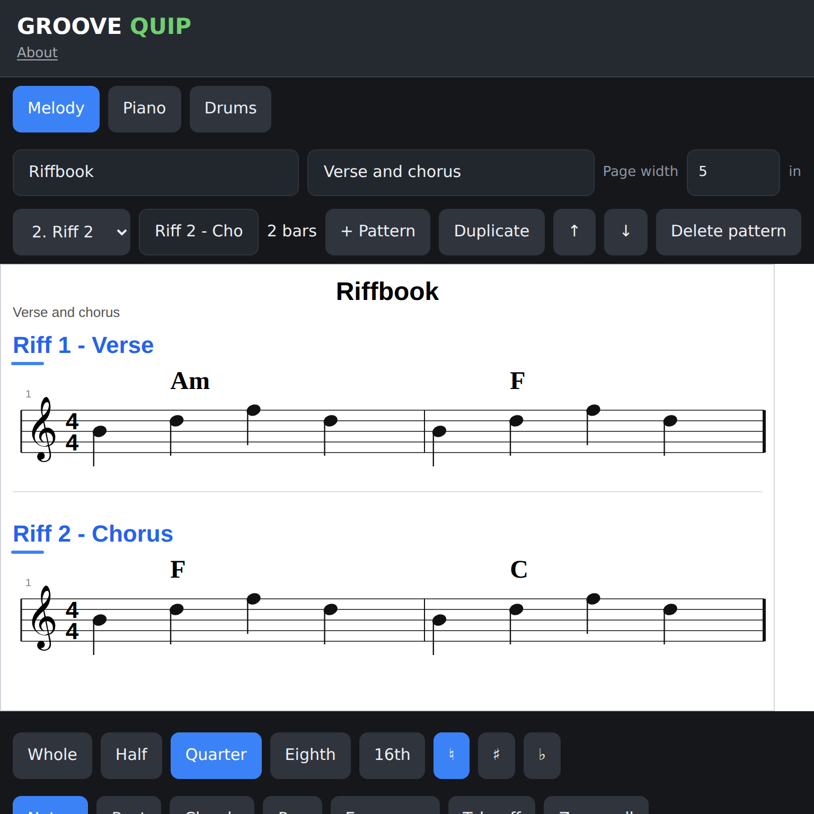

A small place for a big idea
GROOVE QUIP
A melody in your head. A rhythm on the table. Get it down before it disappears.
Groove Quip is a quick, touch-friendly music notation sketchpad for anyone with an idea to capture. It is made for musical sparks, riffs, and short grooves—not for writing or engraving big, finished pieces.
Start a quick sketch- Melody & piano
- Drum grooves
- Named patterns
- Hand annotations

Start with the score
Catch the tune while it is still in your head.
Tap notes onto a treble staff, choose their length, and add chord symbols above the measure. Piano mode gives you a grand staff when your idea needs both hands.
Build a groove
Find the pulse one hit at a time.
Tap a simple instrument grid and see the rhythm appear in notation above. Start with a small kit, then add the parts that belong in your groove.


Keep ideas in sections
Give each musical thought its own place.
Make named patterns for a verse, chorus, or alternate riff. Each one keeps its own measures, notes, chords, and annotations; switch between them as the idea takes shape.
Think on the page
Leave a handwritten thought beside the music.
Circle a note, sketch a reminder, or leave a question for later. Pen marks stay attached to their measure as the score changes shape, and can be hidden without deleting them.

Your next idea is waiting
Open a blank page and see where it goes.